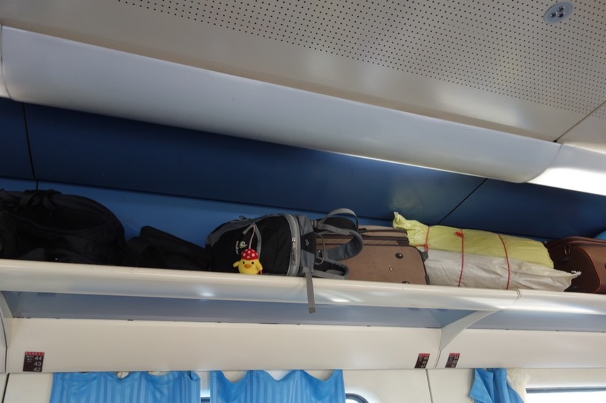
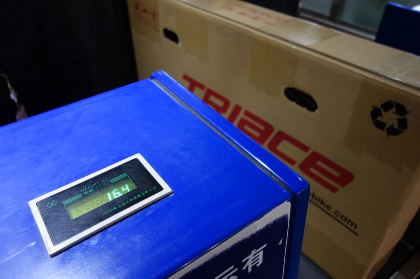

11/3 Day 14 蘭州
入夜後，溫度降低。
車廂內開暖氣，但空氣悶到令人難受，而且還有人就在車廂座位上抽煙，實在可惡。
車廂門則冷到結凍了。天亮後溫度回升，冰霜融化成水，車廂居然因此而淹水。
有點訝異天亮之後，火車經過的地方還能看見雪景。
明明都離開格爾木好一段距離了，看來冬天已經來臨，下雪的範圍越來越廣。
隨著沿路經過的幾個站點，列車上的人上上下下，座位開始空了些，行李架也是。
一直放在腳邊很礙事的背包總算能放上行李架去，建議自助旅行的人，行李多的話建議買張臥鋪車票。

慢慢接近西寧，有點擔心能否順利轉乘。
補充：青藏公路的火車是專用車廂（供氧），從西藏下來不論要去哪裡，都要在西寧轉成一般火車。
站在車廂出入口的門邊，想要在混亂之前先下車，畢竟幾百人帶著一堆的行李在月台上轉車...
但下車後還是小混亂。
我要從右邊那輛綠色的青藏鐵路火車，換乘左邊那輛白色的一般火車（依然有分硬臥、軟握、跟硬座）
月台上人看起來不多，因為大致上都已經上車了，只有我還在月台上像無頭蒼蠅一般被趕過來又揮過去。。
換乘火車座位號碼是一比一的，你現在在哪節車廂的幾號座位，換成過去就是一樣的車廂跟位置。
聽起來問題不大，但是從所在的第十節車廂上車，想照慣例把紙箱放在走廊，卻被乘務員阻止。
”這紙箱太大了！“
乘務員叫我拿去第九節車廂放。
差異在哪？
第九節跟第十節車廂都是硬座車廂，而且一樣的行李，從拉薩就可以上火車，
一經轉車就不能上是什麼鬼道理？
難道我的行李因為轉車的關係就不給運送要我丟在月台嗎？
果然第九節車廂的乘務員也不給放，但是他給了一個比較好的建議。
不要叫我去鬼打牆的第八節車廂問問，而是叫我去比較沒有人的第十二節臥鋪車廂。
是個好主意，沒人就沒行李，這樣我的紙箱放走廊就不會被刁難。
但問題是我買的票是硬座 能上臥鋪車廂嗎？
在月台上來回奔波，低聲下氣的，
臥鋪車廂的乘務員扯著嗓子朝第八節車廂的乘務員喊說，
”這人又不是坐這的，你叫他來這邊做什麼？“
”可以買硬座車票，但是行李放在臥鋪車廂的情況嗎？“
但第八節車廂的乘務員故意裝作沒聽到不理會。
好不容易才在發車前一刻得到臥鋪乘務員的同意，願意讓我放行李。
謝謝你，不知名的女乘務員，我真的不是來亂的，只想把小喵號帶回家而已。
這麼折騰，但是西寧到他媽蘭州只有一站的距離而已...
因為只有一站，乘務員說那就在這節車廂待著吧，不用回硬座車廂了。
硬座車廂整個擠到爆炸，臥鋪車廂卻空蕩蕩的。
乘務員還很得意地說，都沒人～真是太好了，其實還蠻諷刺 。
得到乘務員的同意，坐在走廊邊的小椅子看風景。
外頭一片灰濛濛，實在沒什麼好看的。
拍了幾張硬臥車廂的照片
硬臥跟軟臥的差異主要是
*六人睡vs四人睡
*不能關門（連門都沒有）vs可以關門
*充電插頭？
附帶一提，其實帶單車上火車很常見，而且事實上是不需要費心思裝箱的。
這是我在別節車廂走道看到的登山車，只要拆解前輪就可以直接帶上火車。
提供給想騎車上拉臟，搭火車下來的人當作參考。
另外如果你不想把單車帶回來也行，火車站週邊很多商家在回收腳踏車（價錢不明）
下午一點二十一抵達蘭州火車站。
可以估計到的不確定因素都一一解除了。
成功的將小喵號從拉薩用火車運了下來（而且免運費！事實上也不應該被收運費就是。）
走過長長的走道，出站就是市區。
到蘭州後，計劃是搭計程車到第一天入住的地震招待所
一來便宜（相對便宜），二來離明天清晨要搭機場巴士的乘車處步行可達。
一離開火車站就發現跟2007年我來的時候已經大不相同了（大～大～的不相同）
沒地圖只好憑第六感亂走，就算找不到旅館的路，但找吃牛肉麵的地方不成問題。
蘭州處處都是牛肉麵，而且好便宜 一碗好吃又大碗的麵才6元。
小菜有多種可以挑，都是一盤1元 但我都說不出那是什麼菜。
吃完後（超滿足～去他的火車貴桑桑又難吃的坑人餐點）問一下店員，天水路上的蘭州大學，離這邊會很遠嗎？
答案是不會很遠，但是我走錯方向了。
從一出火車站開始就走反了 （應該要左轉但是我的雷達跟我說要右轉）
有點想叫計程車，因為拿著紙箱頗重又不好移動。
此時此刻 一輛“保證沒有執照”的三輪露天計程車把我攔下來
我說了要去的地方 問多少錢？ 對方開10元，立馬跳上車。
坐在車上真是一整個輕鬆呀，而且麵店的小姐說不遠，其實還挺遠的= =
在蘭州大學那個大路口下車。
保證無牌，但是收費便宜，而且載上紙箱剛剛好！
抬著紙箱又回到地震招待所，出發第一天所住的地方。

距離今天正好兩個星期，真是時光匆匆，一眨眼就兩個星期過去了。
服務員還記得我，而這次有兩人房了，比三人房便宜10元。（房間跟三人房一模一樣，只是少了一張床罷了）
卸下背包，最輕裝上路，但是卻忘了換穿拖鞋，等我走回來，腳指都磨到流血了 >”<
經過書報攤聞到好香的烤香腸味道，忍不住買了一根來吃。
先去下車處跟司機打聽情報，確認完明天早上巴士的上車地點、發車時間和間隔之後就沒事做了。
隨便亂走想買些小吃，順便走到黃河邊去，看看這幾年的變化。
雖然蘭州我很不熟，但你的變化也太大了吧～（傻眼）
我試圖想要逛街，結果連續走了一個小時，右手邊只有一道圍牆。
好吧，現在看到我還是笑不太出來...
我還買了看起來很厲害，但事實上卻很難吃的冰糖葫蘆。
冰糖葫蘆在台灣都是串小番茄或是草莓，這邊可以串橘子跟奇異果還有一些有的沒的。
而且很難吃。（另外我還吃了很油臭味的炸雞翅，跟不那麼難吃但是很貴的炸地瓜條）
走回到蘭州大學週邊的時候，終於出現店家，結果都是電腦賣場，就像光華商場這樣的感覺。
繞一圈頗累且沒什麼收穫（除了腳走到流血之外）
回招待所休息，明天的計劃是四點半起床、五點出門、搭上五點半那班巴士去機場。
晚餐隨便吃，就跟我剛抵達蘭州的那一餐一樣，在招待所旁的小賣店買了泡麵+一根熱狗一起泡著吃。

結束了25小時的火車之旅，回到旅行出發的起點，離家又更近了一點。
——我是分隔線——
我發現當初的遊記只寫到上面這一句就結束了，沒有第15天的遊記。
隔天清早起床，摸黑出門。
到了機場巴士站之後，買完票卻搭不上巴士（客滿、下一班也客滿、下下班才有位置）
就像是串通好的一樣，巴士站週邊都是計程車，對著趕時間又搭不上巴士的人吆喝著，搭計程車。
好不容易上了班班客滿的巴士，雖然我不願意這樣講，但是售票處只負責賣票。
票券上是沒有乘車時間的限制，有車就可以搭，加上沒有排隊線，加上大家都趕著去機場，
加上現場沒有工作人員管理排隊的秩序，所以那插隊的情況實在令人厭煩。
但如果你沒有一點“老子也要回家！”的氣魄，你真的連巴士都上不了，只能在清晨的街道上一直罵髒話。
幸虧，巴士的班次很頻繁，如果真的像官網說的20（？）分鐘一班，那就吃大便了，事實上大約3~5分鐘就一班車。
在機場排隊的時候發現，原來飛往港澳有自己的通關櫃檯（雖然安檢比較嚴格，但是可以跟國內線人擠人分開）
只有一班飛機的時間是我在乎的，帶我回家吧。
飛機託運單車紙箱這件事情是我最不擔心的，加上一路上把帶來的零食都吃光光了，也沒有買紀念品。
所以行李的重量只減不增，也沒有行李超重的問題。

照片拍不太出來，但機場外面也飄起了小小的雪花。
飛離蘭州的時候，整個城市都還霧濛濛的。
這是蘭州<->桃園直航飛機的座位，是小飛機，左右各三排座位。
但坐起來位置不會覺得那麼小，也許是因為我經歷過青藏鐵路硬座車廂的試驗吧。（哈）
回到桃園時是好天氣，正當我想著小喵號的紙箱會被工作人員從哪邊抬出來的時候，它就從行李機轉了出來。
10月21日出發，11月4日回到家。
出發前早上量體重是80公斤，回家後量變成77.7公斤。
我也可以出一本“輕輕鬆鬆騎單車上青藏公路減肥法”的書嗎？
奧～我可憐的凍傷腳踝，現在看起來還覺得痛，經過了幾個月終於好多了。（黑黑的顏色還在）
四天後，11月8日。
我結婚了。
新旅程 展開
今日花費
6 午餐 蘭州牛肉麵
1 小菜一碟
10 無牌計程車 火車站-》地震招待所
80 住宿 地震招待所 雙人房
2.5 書報攤賣的熱狗
15 硬邦邦的地瓜條
14.4 很油的炸雞翅 x 2隻
4 很難吃的冰糖葫蘆 真的難吃
4 晚餐 碗麵
2 熱狗腸
———
138.9